2022-2023
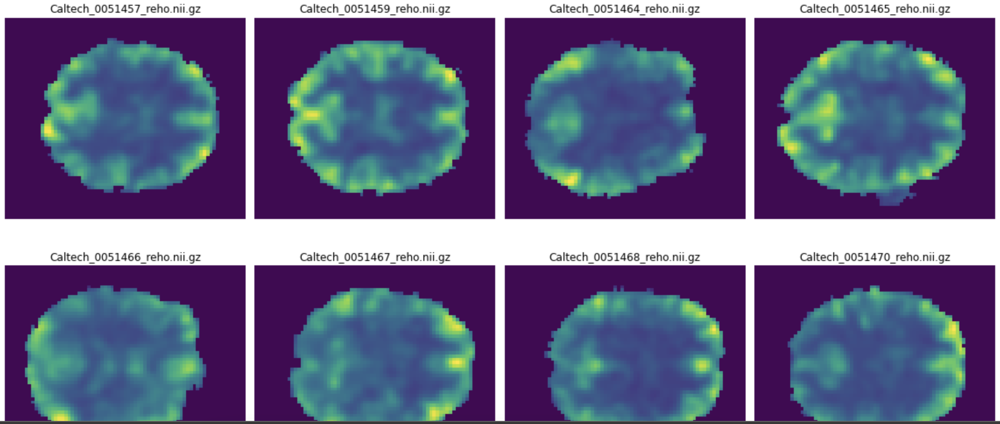ASD prediction using fMRI Datasets(RL)
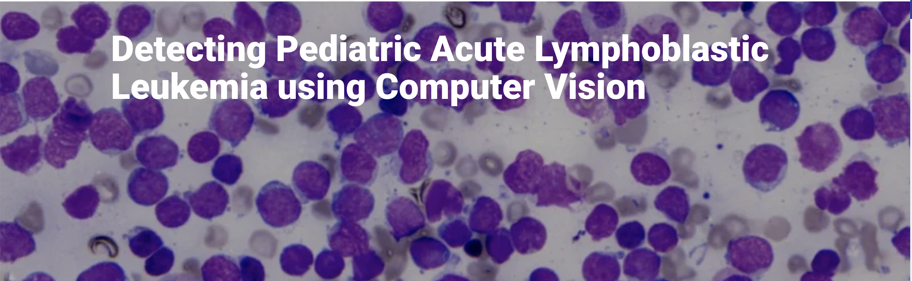ALL detection using ML
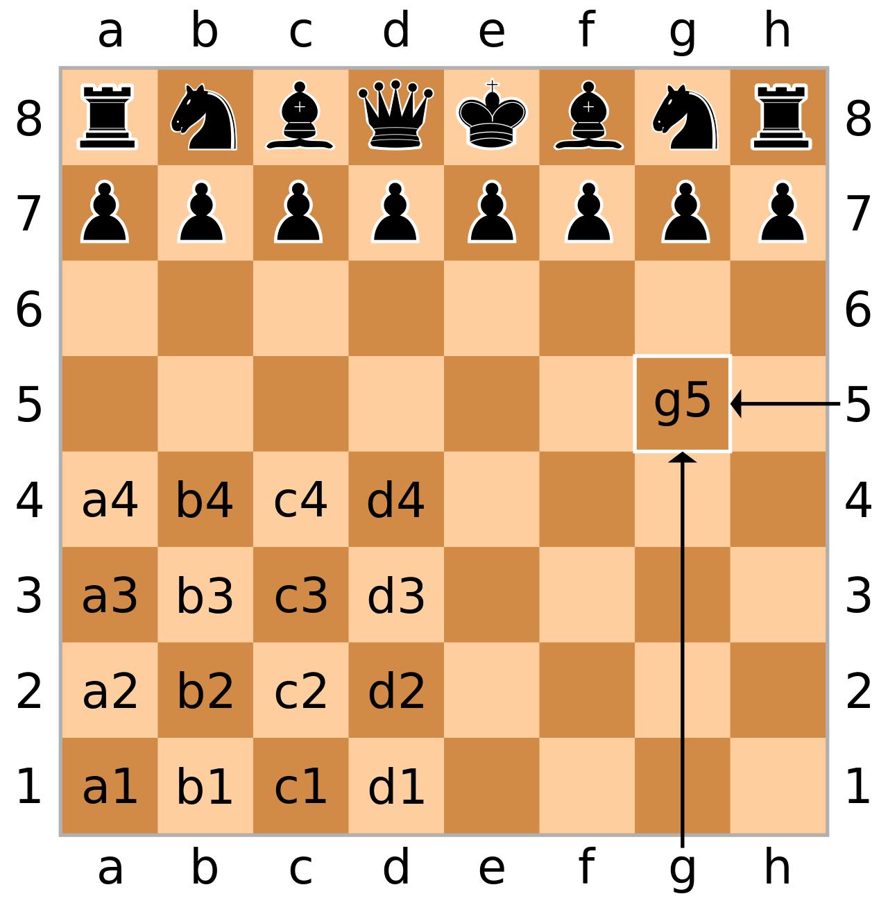Quantum Games (Quantum Chess)
2021-2022
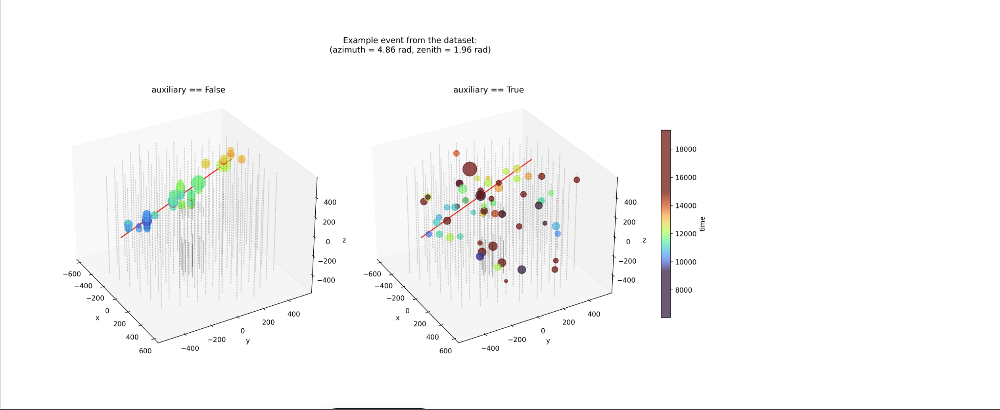Ice-cube Neutrino (GNN)
Multi-Objective recommender System
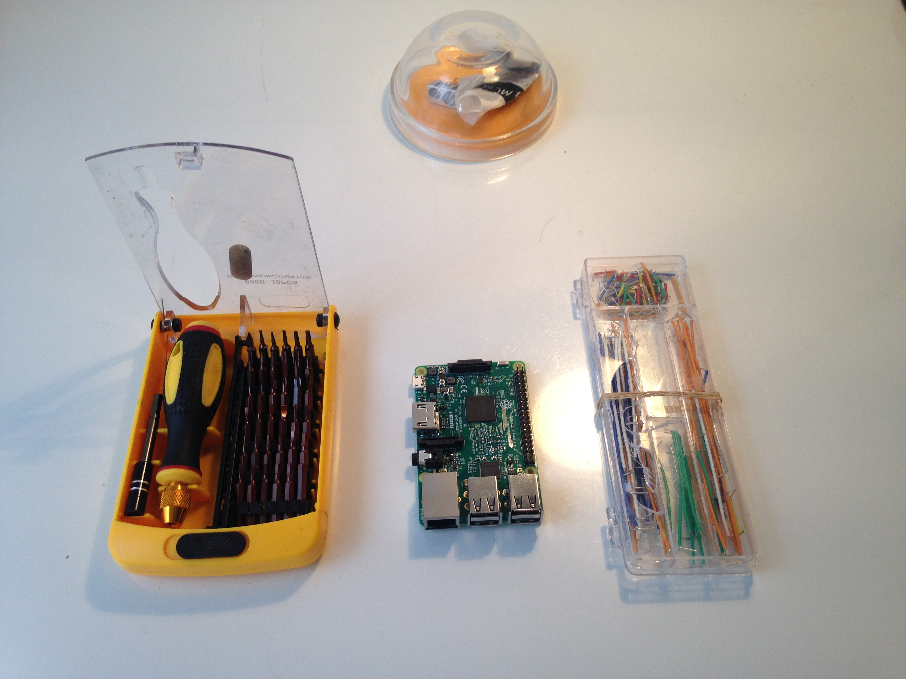Raspberry pi
2020-2021
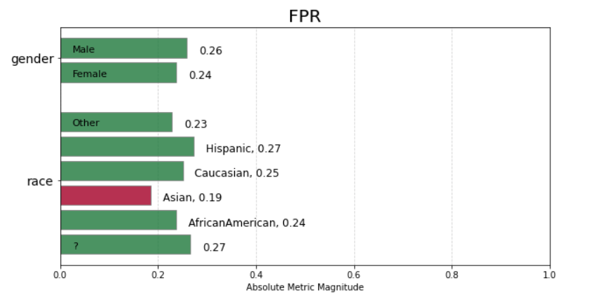Patient-Selection
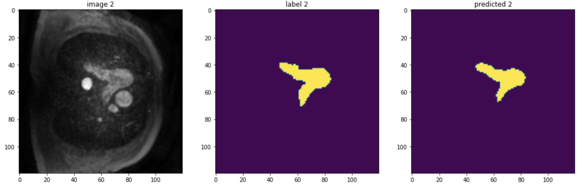PA-Segmentation(DL)
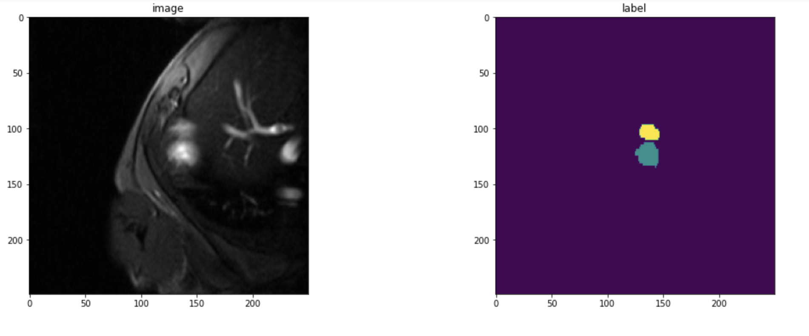Ventricle-Segmentation(DL)
2019-2020
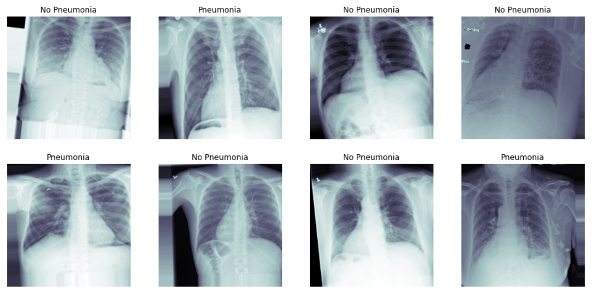Pneumonia Detection
 Hippocampal volume quantification (DL)
Hippocampal volume quantification (DL)
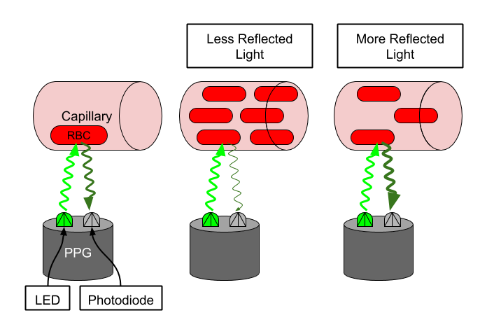Pulse rate estimation
2018-2019
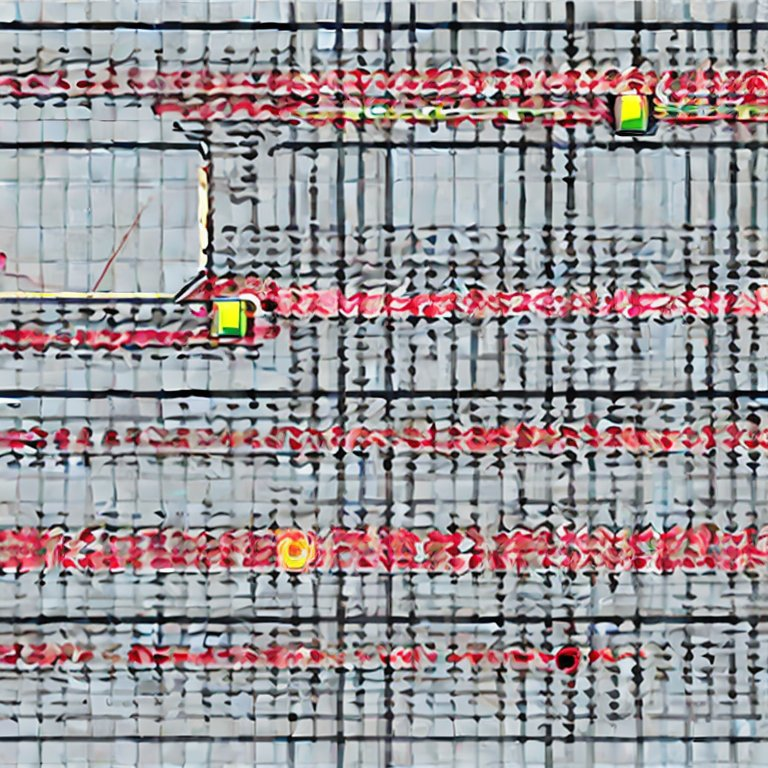Active Flow Control (RL)
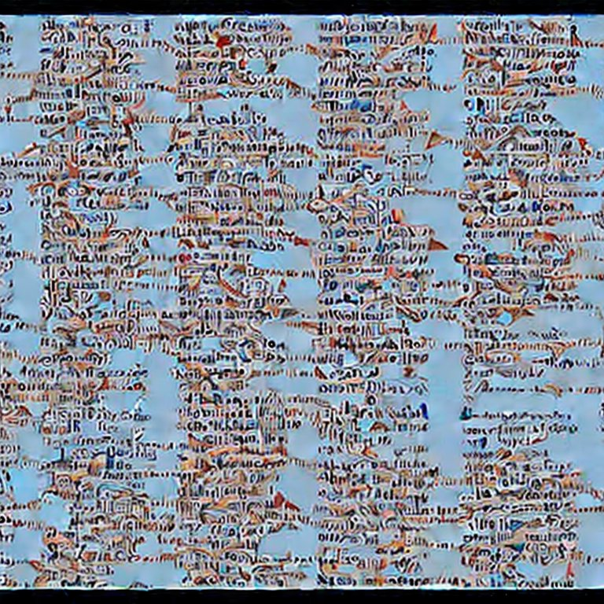Character-Level LLM
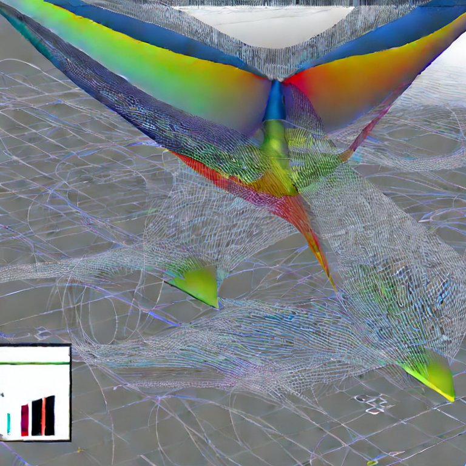Interactive aerodynamic design